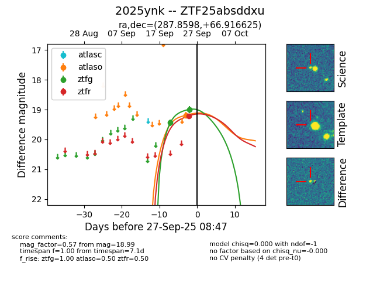
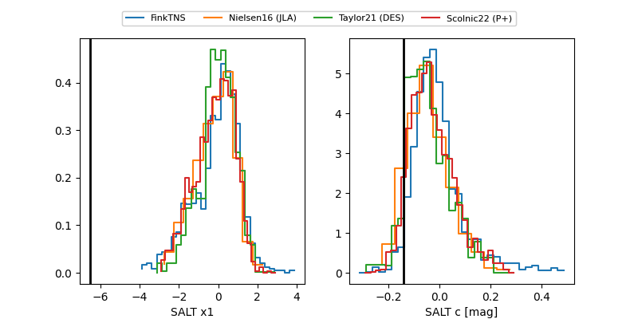

FINK: ZTF25absddxu
Lasair: ZTF25absddxu
ALeRCE: ZTF25absddxu
TNS: 2025ynk
YSE: 2025ynk
ZTF25absddxu (ztf,fink)
2025ynk (tns,yse)
equatorial (ra, dec) = (287.8598,+66.91662)
galactic (l, b) = (97.8456,+22.89611)


last atlaso=19.19, ztfg=18.99, ztfr=19.21
1 atlaso, 2 ztfg, 1 ztfr detections